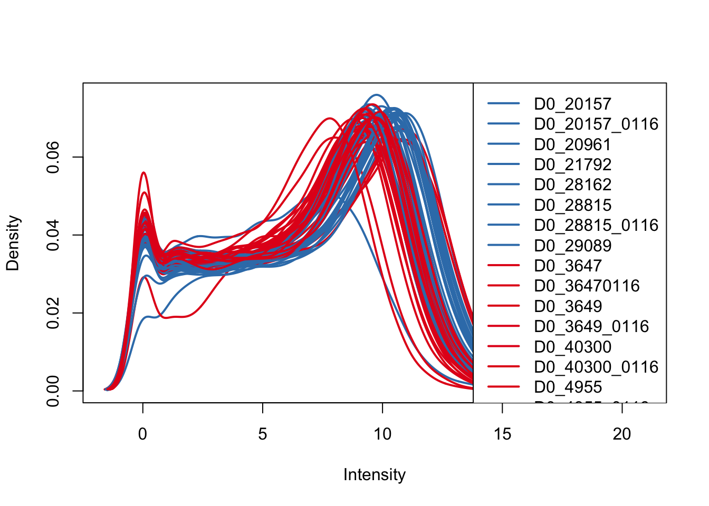
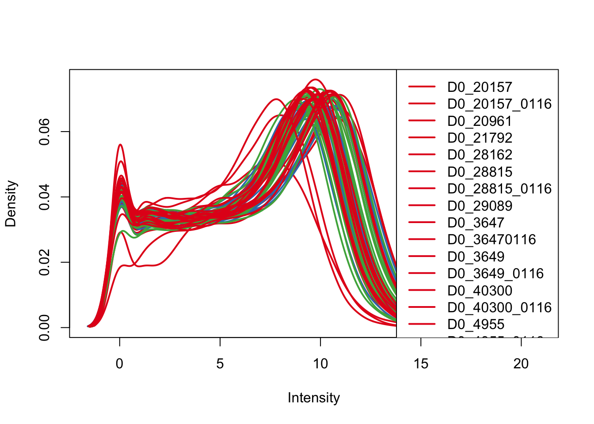
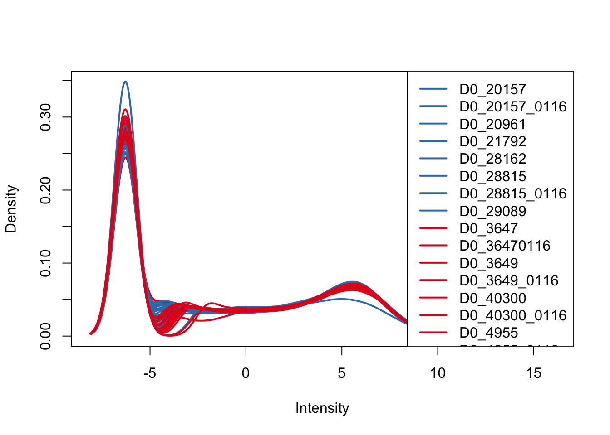
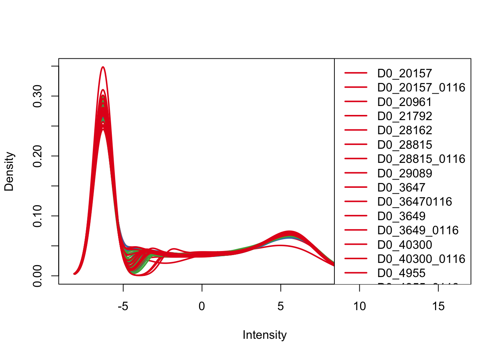
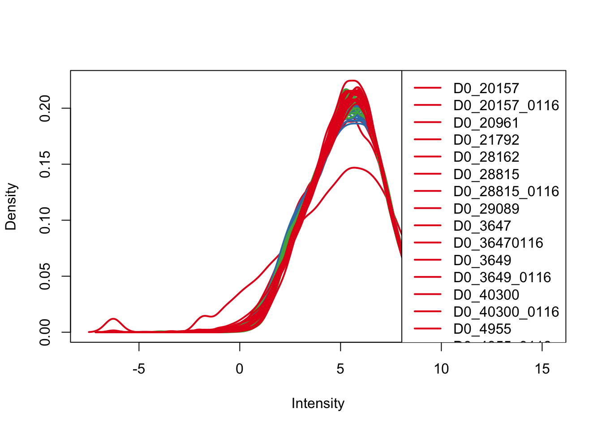
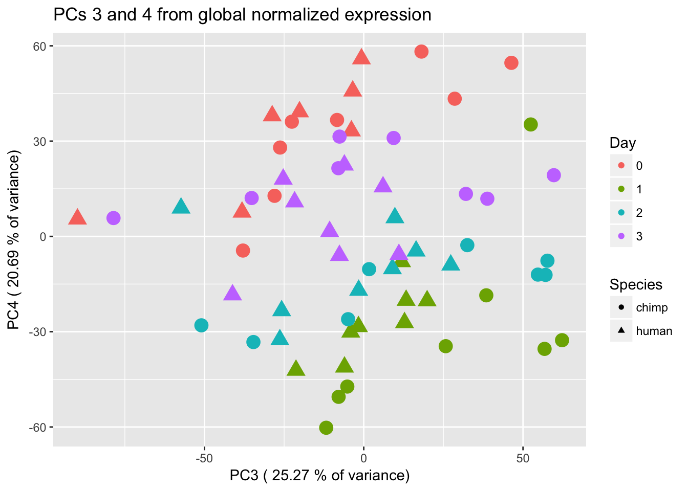
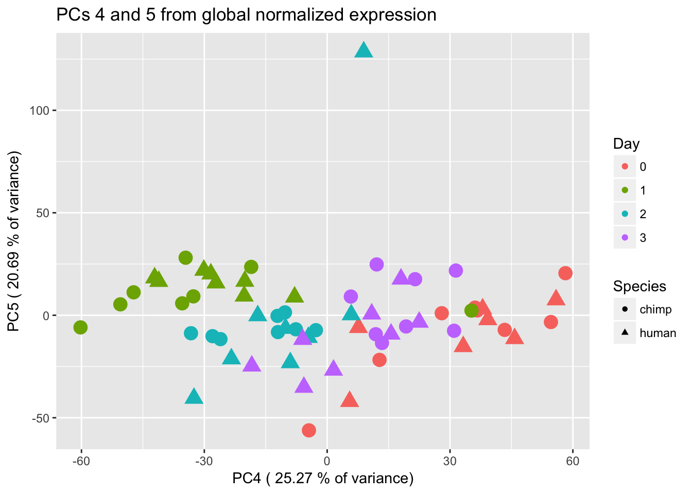
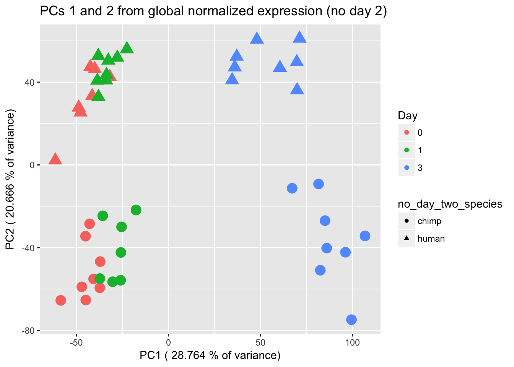

Normalization
Lauren Blake
November 8, 2016
VISUALIZATION OF THE RAW DATA
# Load libraries
library("gplots")##
## Attaching package: 'gplots'## The following object is masked from 'package:stats':
##
## lowesslibrary("ggplot2")
library("RColorBrewer")
library("scales")
library("edgeR")## Loading required package: limmasource("~/Desktop/Endoderm_TC/ashlar-trial/analysis/chunk-options.R")
# Load colors
colors <- colorRampPalette(c(brewer.pal(9, "Blues")[1],brewer.pal(9, "Blues")[9]))(100)
pal <- c(brewer.pal(9, "Set1"), brewer.pal(8, "Set2"), brewer.pal(12, "Set3"))
# Set cutoff for lowly expressed genes
expr_cutoff <- 1.5
# Load count data
gene_counts_combined_raw_data <-read.delim("~/Desktop/Endoderm_TC/gene_counts_combined.txt", header=TRUE)
counts_genes <- gene_counts_combined_raw_data[1:30030,2:65]
rownames(counts_genes) <- gene_counts_combined_raw_data[1:30030,1]
#counts_genes <- gene_counts
# Load sample info
Endoderm_mapping_core_1 <- read.csv("~/Desktop/Endoderm_TC/ashlar-trial/data/Endoderm_mapping_core_1.csv")
# Make labels with species and day
species <- Endoderm_mapping_core_1$Species
day <- Endoderm_mapping_core_1$Day
individual <- Endoderm_mapping_core_1$Individual
Sample_ID <- Endoderm_mapping_core_1$Sample_ID
labels <- paste(species, day, sep=" ")# Hierarchical clustering on raw data
cors <- cor(counts_genes, method="spearman", use="pairwise.complete.obs")
heatmap.2( cors, scale="column", col = colors, margins = c(12, 12), trace='none', denscol="white", labCol=labels, ColSideColors=pal[as.integer(as.factor(Endoderm_mapping_core_1$Species))], RowSideColors=pal[as.integer(as.factor(Endoderm_mapping_core_1$Day))+9], cexCol = 0.2 + 1/log10(15), cexRow = 0.2 + 1/log10(15))
#PCA function (original code from Julien Roux)
#Load in the plot_scores function
plot_scores <- function(pca, scores, n, m, cols, points=F, pchs =20, legend=F){
xmin <- min(scores[,n]) - (max(scores[,n]) - min(scores[,n]))*0.05
if (legend == T){ ## let some room (35%) for a legend
xmax <- max(scores[,n]) + (max(scores[,n]) - min(scores[,n]))*0.50
}
else {
xmax <- max(scores[,n]) + (max(scores[,n]) - min(scores[,n]))*0.05
}
ymin <- min(scores[,m]) - (max(scores[,m]) - min(scores[,m]))*0.05
ymax <- max(scores[,m]) + (max(scores[,m]) - min(scores[,m]))*0.05
plot(scores[,n], scores[,m], xlab=paste("PC", n, ": ", round(summary(pca)$importance[2,n],3)*100, "% variance explained", sep=""), ylab=paste("PC", m, ": ", round(summary(pca)$importance[2,m],3)*100, "% variance explained", sep=""), xlim=c(xmin, xmax), ylim=c(ymin, ymax), type="n")
if (points == F){
text(scores[,n],scores[,m], rownames(scores), col=cols, cex=1)
}
else {
points(scores[,n],scores[,m], col=cols, pch=pchs, cex=1.3)
}
}
# Run the PCA
# Check that there's no "NAs" in the data
select <- counts_genes
summary(apply(select, 1, var) == 0) Mode FALSE TRUE
logical 25466 4564 row_sub = apply(counts_genes, 1, function(row) all(row !=0 ))
counts_genes_no0 <- counts_genes[row_sub,]
# Perform PCA
pca_genes <- prcomp(t(counts_genes_no0), scale = T)
scores <- pca_genes$x
#Make PCA plots with the factors colored by day
### PCs 1 and 2 Raw Data
for (n in 1:1){
col.v <- pal[as.integer(species)]
plot_scores(pca_genes, scores, n, n+1, col.v)
}
for (n in 1:1){
col.v <- pal[as.integer(species)]
plot_scores(pca_genes, scores, n, n+1, col.v)
}
INITIALIZE NORMALIZATION
expr_cutoff <- 1.5
# Let's see what happens when we take the log2 of the raw counts
log_counts_genes <- as.data.frame(log2(counts_genes))
head(log_counts_genes) D0_20157 D0_20157_0116 D0_20961 D0_21792 D0_28162
ENSG00000000003 11.521110 10.709945 12.048487 12.100662 12.897278
ENSG00000000005 5.321928 2.807355 5.169925 4.807355 7.228819
ENSG00000000419 10.456354 10.198445 10.961450 11.321364 12.038919
ENSG00000000457 7.357552 5.643856 8.588715 8.076816 9.111136
ENSG00000000460 9.440869 7.189825 10.786270 10.148477 10.680360
ENSG00000000938 1.584963 0.000000 4.584963 3.321928 4.954196
D0_28815 D0_28815_0116 D0_29089 D0_3647 D0_36470116
ENSG00000000003 11.989040 12.155451 11.224002 12.154818 13.254881
ENSG00000000005 5.857981 7.087463 2.584963 3.169925 4.169925
ENSG00000000419 10.718533 11.145932 10.459432 9.905387 11.949827
ENSG00000000457 8.076816 9.002815 7.988685 8.668885 10.129283
ENSG00000000460 9.829723 10.291171 9.479780 9.882643 10.920353
ENSG00000000938 2.807355 3.906891 1.000000 -Inf 1.000000
D0_3649 D0_3649_0116 D0_40300 D0_40300_0116 D0_4955
ENSG00000000003 11.194141 10.038919 11.894818 11.224002 13.39460
ENSG00000000005 2.321928 0.000000 3.807355 2.321928 4.70044
ENSG00000000419 8.980140 8.515700 9.663558 9.596190 11.24555
ENSG00000000457 8.294621 6.918863 8.930737 8.672425 10.37504
ENSG00000000460 8.888743 7.569856 9.554589 9.703904 10.82655
ENSG00000000938 -Inf 0.000000 1.000000 -Inf 1.00000
D0_4955_0116 D1_20157 D1_20157_0116 D1_20961 D1_21792
ENSG00000000003 11.038233 12.735133 11.849014 11.160502 11.843529
ENSG00000000005 2.584963 7.700440 7.169925 6.794416 7.658211
ENSG00000000419 9.177420 11.967226 11.147841 10.714246 11.277287
ENSG00000000457 8.299208 8.778077 7.787903 7.357552 7.748193
ENSG00000000460 9.290019 10.556506 9.923327 9.503826 10.049849
ENSG00000000938 0.000000 1.584963 0.000000 0.000000 0.000000
D1_28162 D1_28815 D1_28815_0116 D1_29089 D1_3647
ENSG00000000003 12.377211 12.658435 12.395534 11.656872 11.034799
ENSG00000000005 6.832890 8.294621 8.422065 6.357552 3.459432
ENSG00000000419 11.536247 11.971184 11.871135 11.176173 9.377211
ENSG00000000457 8.262095 8.894818 9.014020 7.832890 8.290019
ENSG00000000460 10.370687 10.694358 11.091435 10.005625 9.052568
ENSG00000000938 2.807355 1.000000 0.000000 1.000000 -Inf
D1_3647_0116 D1_3649 D1_3649_0116 D1_40300
ENSG00000000003 10.550747 11.401413 11.483312 12.233919
ENSG00000000005 1.000000 2.000000 0.000000 2.000000
ENSG00000000419 9.411511 9.649256 10.040290 10.350939
ENSG00000000457 7.977280 8.717676 8.554589 9.162391
ENSG00000000460 8.693487 9.335390 9.142107 9.977280
ENSG00000000938 0.000000 0.000000 -Inf -Inf
D1_40300_0116 D1_4955 D1_4955_0116 D2_20157
ENSG00000000003 11.051209 11.438272 12.670878 11.876133
ENSG00000000005 2.321928 3.584963 2.321928 5.209453
ENSG00000000419 9.465566 9.870365 11.398209 11.547377
ENSG00000000457 8.479780 8.614710 9.840778 8.573647
ENSG00000000460 9.537218 9.068778 10.904635 9.583083
ENSG00000000938 -Inf -Inf -Inf -Inf
D2_20157_0116 D2_20961 D2_21792 D2_28162 D2_28815
ENSG00000000003 10.650154 10.291171 11.325868 12.052908 10.650154
ENSG00000000005 3.321928 4.459432 4.857981 2.807355 6.375039
ENSG00000000419 10.421013 10.130571 11.186114 11.620220 11.627990
ENSG00000000457 7.159871 7.321928 8.049849 8.885696 9.802516
ENSG00000000460 8.507795 8.599913 9.719389 10.086136 10.209453
ENSG00000000938 0.000000 -Inf 0.000000 2.584963 2.000000
D2_28815_0116 D2_29089 D2_3647 D2_3647_0116 D2_3649
ENSG00000000003 11.740202 11.353698 11.174926 10.471675 11.527966
ENSG00000000005 6.845490 4.954196 0.000000 -Inf -Inf
ENSG00000000419 11.273213 11.032046 9.596190 9.184875 9.784635
ENSG00000000457 9.296916 8.285402 8.622052 8.388017 8.930737
ENSG00000000460 10.491853 9.831307 9.134426 8.487840 9.071462
ENSG00000000938 1.584963 1.000000 -Inf -Inf 0.000000
D2_3649_0116 D2_40300 D2_40300_0116 D2_4955
ENSG00000000003 10.803324 11.479275 10.381543 10.807355
ENSG00000000005 0.000000 0.000000 0.000000 2.807355
ENSG00000000419 9.211888 9.909893 9.025140 9.328675
ENSG00000000457 8.400879 9.111136 8.388017 8.266787
ENSG00000000460 8.060696 9.139551 8.479780 8.164907
ENSG00000000938 0.000000 -Inf -Inf -Inf
D2_4955_0116 D3_20157 D3_20157_0116 D3_20961 D3_21792
ENSG00000000003 11.355351 11.591522 10.720244 10.552669 11.376668
ENSG00000000005 -Inf 3.700440 2.321928 4.169925 4.700440
ENSG00000000419 10.149747 11.239599 9.906891 10.210671 11.446566
ENSG00000000457 9.283088 8.643856 7.442943 7.636625 8.945444
ENSG00000000460 9.601771 9.714246 8.129283 8.744834 10.103288
ENSG00000000938 -Inf -Inf -Inf -Inf 0.000000
D3_28162 D3_28815 D3_28815_0116 D3_29089 D3_3647
ENSG00000000003 11.734710 11.029287 12.028597 11.053926 10.936638
ENSG00000000005 2.321928 4.000000 8.794416 4.169925 3.000000
ENSG00000000419 11.327553 10.564149 11.224002 10.551708 9.473706
ENSG00000000457 8.679480 8.164907 9.142107 7.845490 8.918863
ENSG00000000460 9.204571 8.361944 10.221587 9.011227 8.581201
ENSG00000000938 1.000000 -Inf 0.000000 0.000000 -Inf
D3_3647_0116 D3_3649 D3_3649_0116 D3_40300
ENSG00000000003 11.250891 11.122181 9.661778 10.505812
ENSG00000000005 1.000000 0.000000 -Inf 2.000000
ENSG00000000419 9.719389 9.436712 7.672425 9.016808
ENSG00000000457 9.047124 9.149747 7.000000 8.848623
ENSG00000000460 8.103288 7.894818 5.392317 7.988685
ENSG00000000938 0.000000 0.000000 2.000000 -Inf
D3_40300_0116 D3_4955 D3_4955_0116
ENSG00000000003 11.142107 10.512740 10.627534
ENSG00000000005 -Inf 1.000000 -Inf
ENSG00000000419 9.726218 9.259743 9.162391
ENSG00000000457 8.965784 8.903882 8.647458
ENSG00000000460 8.787903 7.523562 8.022368
ENSG00000000938 -Inf -Inf -Inf# Plot density (a) by species and (b) by day
plotDensities(log_counts_genes, col=pal[as.numeric(Endoderm_mapping_core_1$Species)], legend="topright")
plotDensities(log_counts_genes, col=pal[as.numeric(Endoderm_mapping_core_1$Day)], legend="topright")
# Log2(CPM)
cpm <- cpm(counts_genes, log=TRUE)
# Make plot
hist(cpm, main = "log2(CPM) values in unfiltered data (n = 64 samples)", breaks = 100, ylim = c(0, 50000), xlab = "log2(CPM) values")
abline(v = expr_cutoff, col = "red", lwd = 3)# Plot density (a) by species and (b) by day
plotDensities(cpm, col=pal[as.numeric(Endoderm_mapping_core_1$Species)], legend="topright")
plotDensities(cpm, col=pal[as.numeric(Endoderm_mapping_core_1$Day)], legend="topright")
# Plot library size
#boxplot_library_size <- ggplot(dge_original$samples, aes(x = as.factor(Endoderm_mapping_core_1$Day), y = dge_original$samples$lib.size, fill = Endoderm_mapping_core_1$Species)) + geom_boxplot()
#boxplot_library_size + labs(title = "Library size by day") + labs(y = "Library size") + labs(x = "Day") + guides(fill=guide_legend(title="Species"))Filtering lowly expressed genes
We are beginning with 30030 genes and 64 samples (8 samples/species x 4 timepoints/species x 2 species)
#Based on what we have learned from Roux and Blake (http://lauren-blake.github.io/Reg_Evo_Primates/analysis/Correlation_bet_tech_factors_in_best_set_and_expression_stringent_filtering.html), we will use a cutoff of log2(CPM) > 1.5 in at least 16 of the human samples and 16 of the chimp samples.
# Make plot
hist(cpm, main = "log2(CPM) values in unfiltered data (n = 64 samples)", breaks = 100, ylim = c(0, 50000), xlab = "log2(CPM) values")
abline(v = expr_cutoff, col = "red", lwd = 3)
# Filter data
humans <- c(1:8, 17:24, 33:40, 49:56)
chimps <- c(9:16, 25:32, 41:48, 57:64 )
cpm_filtered <- (rowSums(cpm[,humans] > 1.5) > 16 & rowSums(cpm[,chimps] > 1.5) > 16)
genes_in_cutoff <- cpm[cpm_filtered==TRUE,]
dim(genes_in_cutoff)[1] 10270 64# Make a histogram of the filtered data
hist(as.numeric(unlist(genes_in_cutoff)), main = "log2(CPM) values in filtered data (n = 64 samples, 10,270 genes)", breaks = 100, ylim = c(0, 50000), xlab = "log2(CPM) values")About GC Content Normalization
Roux and Blake’s comparative analysis (http://lauren-blake.github.io/Reg_Evo_Primates/analysis/GC_content_normalization_CHT.html) showed that GC content normalization does not substantially impact gene counts. Therefore, we will not perform it in this analysis.
Correction for library size
# Find the original counts of all of the genes that fit the criteria
counts_genes_in_cutoff <- counts_genes[cpm_filtered==TRUE,]
dim(counts_genes_in_cutoff)[1] 10270 64# Take the TMM of the counts only for the genes that remain after filtering
dge_in_cutoff <- DGEList(counts=as.matrix(counts_genes_in_cutoff), genes=rownames(counts_genes_in_cutoff), group = as.character(t(labels)))
dge_in_cutoff <- calcNormFactors(dge_in_cutoff)
cpm_in_cutoff <- cpm(dge_in_cutoff, normalized.lib.sizes=TRUE, log=TRUE)
head(summary(cpm_in_cutoff)) D0_20157 D0_20157_0116 D0_20961 D0_21792
Min. :-0.9894 Min. :-6.277 Min. :-3.625 Min. :-3.906
1st Qu.: 3.9680 1st Qu.: 3.066 1st Qu.: 4.048 1st Qu.: 3.840
Median : 5.3500 Median : 5.165 Median : 5.354 Median : 5.292
Mean : 5.2974 Mean : 4.839 Mean : 5.308 Mean : 5.206
3rd Qu.: 6.5794 3rd Qu.: 6.874 3rd Qu.: 6.575 3rd Qu.: 6.600
Max. :12.7214 Max. :14.024 Max. :12.545 Max. :12.780
D0_28162 D0_28815 D0_28815_0116 D0_29089
Min. :-6.277 Min. :-6.277 Min. :-6.277 Min. :-6.277
1st Qu.: 4.030 1st Qu.: 3.981 1st Qu.: 3.983 1st Qu.: 4.058
Median : 5.396 Median : 5.345 Median : 5.350 Median : 5.357
Mean : 5.311 Mean : 5.277 Mean : 5.286 Mean : 5.313
3rd Qu.: 6.591 3rd Qu.: 6.574 3rd Qu.: 6.564 3rd Qu.: 6.584
Max. :12.369 Max. :12.697 Max. :12.859 Max. :12.393
D0_3647 D0_36470116 D0_3649 D0_3649_0116
Min. :-3.847 Min. :-6.277 Min. :-6.277 Min. :-6.277
1st Qu.: 3.919 1st Qu.: 3.708 1st Qu.: 3.895 1st Qu.: 3.757
Median : 5.308 Median : 5.246 Median : 5.299 Median : 5.267
Mean : 5.251 Mean : 5.164 Mean : 5.222 Mean : 5.168
3rd Qu.: 6.596 3rd Qu.: 6.608 3rd Qu.: 6.578 3rd Qu.: 6.610
Max. :12.686 Max. :12.476 Max. :12.764 Max. :12.925
D0_40300 D0_40300_0116 D0_4955 D0_4955_0116
Min. :-6.277 Min. :-6.277 Min. :-4.746 Min. :-6.277
1st Qu.: 3.952 1st Qu.: 3.897 1st Qu.: 3.850 1st Qu.: 3.870
Median : 5.327 Median : 5.325 Median : 5.286 Median : 5.314
Mean : 5.246 Mean : 5.255 Mean : 5.205 Mean : 5.234
3rd Qu.: 6.590 3rd Qu.: 6.603 3rd Qu.: 6.582 3rd Qu.: 6.604
Max. :12.897 Max. :12.788 Max. :12.819 Max. :12.687
D1_20157 D1_20157_0116 D1_20961 D1_21792
Min. :-2.359 Min. :-2.563 Min. :-1.452 Min. :-6.277
1st Qu.: 3.950 1st Qu.: 3.958 1st Qu.: 3.995 1st Qu.: 3.940
Median : 5.350 Median : 5.348 Median : 5.357 Median : 5.351
Mean : 5.303 Mean : 5.301 Mean : 5.312 Mean : 5.293
3rd Qu.: 6.608 3rd Qu.: 6.593 3rd Qu.: 6.587 3rd Qu.: 6.603
Max. :12.742 Max. :12.874 Max. :12.358 Max. :12.642
D1_28162 D1_28815 D1_28815_0116 D1_29089
Min. :-3.585 Min. :-6.277 Min. :-4.527 Min. :-3.943
1st Qu.: 4.023 1st Qu.: 3.913 1st Qu.: 3.965 1st Qu.: 4.016
Median : 5.380 Median : 5.344 Median : 5.353 Median : 5.365
Mean : 5.315 Mean : 5.285 Mean : 5.307 Mean : 5.317
3rd Qu.: 6.590 3rd Qu.: 6.601 3rd Qu.: 6.596 3rd Qu.: 6.600
Max. :12.838 Max. :12.705 Max. :12.724 Max. :12.346
D1_3647 D1_3647_0116 D1_3649 D1_3649_0116
Min. :-2.492 Min. :-2.163 Min. :-6.277 Min. :-3.535
1st Qu.: 3.932 1st Qu.: 3.912 1st Qu.: 3.841 1st Qu.: 3.749
Median : 5.324 Median : 5.329 Median : 5.306 Median : 5.260
Mean : 5.285 Mean : 5.293 Mean : 5.240 Mean : 5.195
3rd Qu.: 6.617 3rd Qu.: 6.643 3rd Qu.: 6.618 3rd Qu.: 6.613
Max. :12.896 Max. :12.942 Max. :12.758 Max. :12.607
D1_40300 D1_40300_0116 D1_4955 D1_4955_0116
Min. :-4.028 Min. :-1.474 Min. :-6.277 Min. :-6.277
1st Qu.: 3.813 1st Qu.: 3.947 1st Qu.: 3.759 1st Qu.: 3.813
Median : 5.290 Median : 5.356 Median : 5.281 Median : 5.311
Mean : 5.206 Mean : 5.306 Mean : 5.189 Mean : 5.243
3rd Qu.: 6.580 3rd Qu.: 6.615 3rd Qu.: 6.612 3rd Qu.: 6.643
Max. :13.001 Max. :12.780 Max. :12.896 Max. :12.712
D2_20157 D2_20157_0116 D2_20961 D2_21792
Min. :-1.643 Min. :-1.862 Min. :-0.2512 Min. :-1.138
1st Qu.: 4.034 1st Qu.: 3.977 1st Qu.: 4.0231 1st Qu.: 4.019
Median : 5.383 Median : 5.370 Median : 5.3629 Median : 5.366
Mean : 5.348 Mean : 5.316 Mean : 5.3503 Mean : 5.349
3rd Qu.: 6.572 3rd Qu.: 6.594 3rd Qu.: 6.5847 3rd Qu.: 6.580
Max. :13.725 Max. :13.646 Max. :13.2244 Max. :12.932
D2_28162 D2_28815 D2_28815_0116 D2_29089
Min. :-2.997 Min. :-2.890 Min. :-3.607 Min. :-1.372
1st Qu.: 4.030 1st Qu.: 4.096 1st Qu.: 4.021 1st Qu.: 4.092
Median : 5.386 Median : 5.415 Median : 5.383 Median : 5.370
Mean : 5.334 Mean : 5.381 Mean : 5.339 Mean : 5.357
3rd Qu.: 6.583 3rd Qu.: 6.669 3rd Qu.: 6.569 3rd Qu.: 6.560
Max. :13.897 Max. :12.443 Max. :13.251 Max. :12.522
D2_3647 D2_3647_0116 D2_3649 D2_3649_0116
Min. :-0.9076 Min. :-1.522 Min. :-2.161 Min. :-6.277
1st Qu.: 3.9531 1st Qu.: 4.039 1st Qu.: 4.003 1st Qu.: 3.881
Median : 5.3625 Median : 5.390 Median : 5.366 Median : 5.340
Mean : 5.3251 Mean : 5.342 Mean : 5.317 Mean : 5.234
3rd Qu.: 6.6357 3rd Qu.: 6.619 3rd Qu.: 6.601 3rd Qu.: 6.610
Max. :13.1232 Max. :13.607 Max. :13.594 Max. :12.862
D2_40300 D2_40300_0116 D2_4955 D2_4955_0116
Min. :-0.7417 Min. :-1.791 Min. :-6.277 Min. :-6.277
1st Qu.: 3.9560 1st Qu.: 3.960 1st Qu.: 3.940 1st Qu.: 3.931
Median : 5.3484 Median : 5.359 Median : 5.329 Median : 5.364
Mean : 5.3038 Mean : 5.314 Mean : 5.271 Mean : 5.290
3rd Qu.: 6.6030 3rd Qu.: 6.648 3rd Qu.: 6.577 3rd Qu.: 6.655
Max. :13.2013 Max. :13.587 Max. :13.100 Max. :13.514
D3_20157 D3_20157_0116 D3_20961 D3_21792
Min. :-2.060 Min. :-2.545 Min. :-0.5907 Min. :-0.958
1st Qu.: 4.114 1st Qu.: 4.091 1st Qu.: 4.1101 1st Qu.: 4.106
Median : 5.409 Median : 5.414 Median : 5.3860 Median : 5.395
Mean : 5.379 Mean : 5.361 Mean : 5.3744 Mean : 5.379
3rd Qu.: 6.606 3rd Qu.: 6.606 3rd Qu.: 6.5787 3rd Qu.: 6.580
Max. :13.317 Max. :14.284 Max. :13.1152 Max. :12.253
D3_28162 D3_28815 D3_28815_0116 D3_29089
Min. :-6.277 Min. :-2.907 Min. :-3.671 Min. :-3.900
1st Qu.: 4.031 1st Qu.: 3.981 1st Qu.: 4.034 1st Qu.: 4.173
Median : 5.431 Median : 5.388 Median : 5.402 Median : 5.405
Mean : 5.346 Mean : 5.316 Mean : 5.354 Mean : 5.388
3rd Qu.: 6.613 3rd Qu.: 6.611 3rd Qu.: 6.590 3rd Qu.: 6.541
Max. :14.448 Max. :13.826 Max. :13.294 Max. :12.500
D3_3647 D3_3647_0116 D3_3649 D3_3649_0116
Min. :-0.9919 Min. :-6.277 Min. :-6.277 Min. :-6.277
1st Qu.: 4.0378 1st Qu.: 4.021 1st Qu.: 4.083 1st Qu.: 3.917
Median : 5.3931 Median : 5.409 Median : 5.412 Median : 5.384
Mean : 5.3686 Mean : 5.312 Mean : 5.323 Mean : 5.222
3rd Qu.: 6.6459 3rd Qu.: 6.646 3rd Qu.: 6.595 3rd Qu.: 6.641
Max. :13.5213 Max. :14.144 Max. :14.109 Max. :13.168
D3_40300 D3_40300_0116 D3_4955 D3_4955_0116
Min. :-6.277 Min. :-3.749 Min. :-6.277 Min. :-6.277
1st Qu.: 4.070 1st Qu.: 4.016 1st Qu.: 4.038 1st Qu.: 3.977
Median : 5.410 Median : 5.403 Median : 5.429 Median : 5.398
Mean : 5.353 Mean : 5.314 Mean : 5.336 Mean : 5.285
3rd Qu.: 6.606 3rd Qu.: 6.629 3rd Qu.: 6.631 3rd Qu.: 6.646
Max. :13.482 Max. :14.081 Max. :13.279 Max. :14.189 # Make density plots of the filtered data
plotDensities(cpm_in_cutoff, col=pal[as.numeric(species)], legend="topright")plotDensities(cpm_in_cutoff, col=pal[as.numeric(day)], legend="topright")
#gplots::heatmap.2(x=as.matrix(t(cpm_in_cutoff)),
# , distfun = dist(x, method = "euclidean"),
# hclustfun = function(x) hclust(dist(x), method = "average"), tracecol=NA, col=colors, denscol="white", ColSideColors=pal[as.integer(as.factor(Day))+9])
cors <- cor(cpm_in_cutoff, method="spearman", use="pairwise.complete.obs")
heatmap.2( cors, scale="column", col = colors, margins = c(12, 12), trace='none', denscol="white", labCol=labels, ColSideColors=pal[as.integer(as.factor(Endoderm_mapping_core_1$Species))], RowSideColors=pal[as.integer(as.factor(Endoderm_mapping_core_1$Day))+9], cexCol = 0.2 + 1/log10(15), cexRow = 0.2 + 1/log10(15))species <- c("H", "H","H","H","H","H","H", "H", "C", "C","C","C","C","C","C","C","H","H","H","H","H","H","H","H", "C", "C","C","C","C","C","C","C", "H","H","H","H","H","H","H","H", "C", "C","C","C","C","C","C","C", "H","H","H","H","H","H","H","H", "C", "C","C","C","C","C","C","C")
day <- c("0", "0","0","0","0","0","0", "0", "0", "0", "0","0","0","0","0", "0","1","1","1","1","1","1","1","1", "1","1","1","1","1","1","1","1", "2", "2","2","2","2","2","2","2","2", "2","2","2","2","2","2","2", "3", "3","3","3","3","3","3","3", "3", "3","3","3","3","3","3", "3")
design <- model.matrix(~ species*day )
colnames(design)[1] <- "Intercept"
colnames(design) <- gsub("speciesH", "Human", colnames(design))
colnames(design) <- gsub(":", ".", colnames(design))
#colnames(design) <- gsub("batch2", "batch", colnames(design))
# We want a random effect term for individual. As a result, we want to run voom twice. See https://support.bioconductor.org/p/59700/
cpm.voom <- voom(dge_in_cutoff, design, normalize.method="cyclicloess")
corfit <- duplicateCorrelation(cpm.voom, design, block=individual)
corfit.correlation = corfit$consensus.correlation
cpm.voom.corfit <- voom(dge_in_cutoff, design, plot = TRUE, normalize.method="cyclicloess", block=individual, correlation = corfit.correlation )Visualizing the filtered data
# Make PCA plots with the factors colored by day
pca_genes <- prcomp(t(cpm.voom.corfit$E), scale = T)
scores <- pca_genes$x
### PCs 1 and 2
for (n in 1:1){
col.v <- pal[as.integer(species)]
plot_scores(pca_genes, scores, n, n+1, col.v)
}Warning: NAs introduced by coercionfor (n in 2:2){
col.v <- pal[as.integer(species)]
plot_scores(pca_genes, scores, n, n+1, col.v)
}Warning: NAs introduced by coercion
pca_for_tmm_outlier <- scores[,1:5]From the PCA plot, we see that Sample D0201570116 is a clear outlier and doesn’t cluster with anything, including its technical replicate. We will remove this sample and then go through the same process as above to visualize the data.
Normalization after removal of Sample D0201570116
# Get data and sample info
counts_genes63 <- counts_genes[,-2]
dim(counts_genes63)[1] 30030 63After_removal_sample_info <- read.csv("~/Desktop/Endoderm_TC/ashlar-trial/data/After_removal_sample_info.csv")
Species <- After_removal_sample_info$Species
species <- After_removal_sample_info$Species
day <- After_removal_sample_info$Day
individual <- After_removal_sample_info$Individual
Sample_ID <- After_removal_sample_info$Sample_ID
labels <- paste(Sample_ID, day, sep=" ")
# Log2(CPM)
cpm <- cpm(counts_genes63, log=TRUE)
# Make plot
hist(cpm, main = "log2(CPM) values in unfiltered data (n = 64 samples)", breaks = 100, ylim = c(0, 50000), xlab = "log2(CPM) values")
abline(v = 1.5, col = "red", lwd = 3)# Filter lowly expressed genes
humans <- c(1:7, 16:23, 32:39, 48:55)
chimps <- c(8:15, 24:31, 40:47, 56:63)
cpm_filtered <- (rowSums(cpm[,humans] > 1.5) > 15 & rowSums(cpm[,chimps] > 1.5) > 16)
genes_in_cutoff <- cpm[cpm_filtered==TRUE,]
dim(genes_in_cutoff)[1] 10304 63# Find the original counts of all of the genes that fit the criteria
counts_genes_in_cutoff <- counts_genes63[cpm_filtered==TRUE,]
dim(counts_genes_in_cutoff)[1] 10304 63#write.table(counts_genes_in_cutoff,file="~/Desktop/Endoderm_TC/ashlar-trial/data/gene_counts_cutoff_norm_data.txt",sep="\t", col.names = T, row.names = T)
# Take the TMM of the counts only for the genes that remain after filtering
dge_in_cutoff <- DGEList(counts=as.matrix(counts_genes_in_cutoff), genes=rownames(counts_genes_in_cutoff), group = as.character(t(labels)))
dge_in_cutoff <- calcNormFactors(dge_in_cutoff)
cpm_in_cutoff <- cpm(dge_in_cutoff, normalized.lib.sizes=TRUE, log=TRUE)
# Make table of the normalized data
write.table(cpm_in_cutoff,file="~/Desktop/Endoderm_TC/ashlar-trial/data/cpm_norm_data.txt",sep="\t", col.names = T, row.names = T)
dim(cpm_in_cutoff)[1] 10304 63head(summary(cpm_in_cutoff)) D0_20157 D0_20961 D0_21792 D0_28162
Min. :-6.284 Min. :-4.394 Min. :-6.284 Min. :-6.284
1st Qu.: 3.969 1st Qu.: 4.063 1st Qu.: 3.831 1st Qu.: 4.027
Median : 5.358 Median : 5.375 Median : 5.291 Median : 5.397
Mean : 5.294 Mean : 5.320 Mean : 5.196 Mean : 5.305
3rd Qu.: 6.592 3rd Qu.: 6.597 3rd Qu.: 6.600 3rd Qu.: 6.597
Max. :12.735 Max. :12.572 Max. :12.787 Max. :12.377
D0_28815 D0_28815_0116 D0_29089 D0_3647
Min. :-6.284 Min. :-6.284 Min. :-6.284 Min. :-3.860
1st Qu.: 3.976 1st Qu.: 3.979 1st Qu.: 4.068 1st Qu.: 3.888
Median : 5.355 Median : 5.354 Median : 5.368 Median : 5.284
Mean : 5.278 Mean : 5.286 Mean : 5.318 Mean : 5.225
3rd Qu.: 6.584 3rd Qu.: 6.576 3rd Qu.: 6.599 3rd Qu.: 6.577
Max. :12.712 Max. :12.873 Max. :12.413 Max. :12.671
D0_36470116 D0_3649 D0_3649_0116 D0_40300
Min. :-6.284 Min. :-6.284 Min. :-6.284 Min. :-6.284
1st Qu.: 3.759 1st Qu.: 3.889 1st Qu.: 3.790 1st Qu.: 3.935
Median : 5.305 Median : 5.297 Median : 5.298 Median : 5.322
Mean : 5.220 Mean : 5.215 Mean : 5.194 Mean : 5.238
3rd Qu.: 6.671 3rd Qu.: 6.578 3rd Qu.: 6.646 3rd Qu.: 6.585
Max. :12.543 Max. :12.769 Max. :12.963 Max. :12.901
D0_40300_0116 D0_4955 D0_4955_0116 D1_20157
Min. :-6.284 Min. :-4.729 Min. :-6.284 Min. :-4.542
1st Qu.: 3.876 1st Qu.: 3.869 1st Qu.: 3.847 1st Qu.: 3.918
Median : 5.311 Median : 5.309 Median : 5.302 Median : 5.330
Mean : 5.236 Mean : 5.222 Mean : 5.216 Mean : 5.276
3rd Qu.: 6.593 3rd Qu.: 6.608 3rd Qu.: 6.595 3rd Qu.: 6.591
Max. :12.781 Max. :12.848 Max. :12.680 Max. :12.731
D1_20157_0116 D1_20961 D1_21792 D1_28162
Min. :-6.284 Min. :-1.443 Min. :-6.284 Min. :-3.571
1st Qu.: 3.939 1st Qu.: 3.986 1st Qu.: 3.910 1st Qu.: 4.022
Median : 5.347 Median : 5.359 Median : 5.330 Median : 5.391
Mean : 5.291 Mean : 5.308 Mean : 5.269 Mean : 5.320
3rd Qu.: 6.595 3rd Qu.: 6.591 3rd Qu.: 6.591 3rd Qu.: 6.604
Max. :12.879 Max. :12.367 Max. :12.632 Max. :12.857
D1_28815 D1_28815_0116 D1_29089 D1_3647
Min. :-6.284 Min. :-4.525 Min. :-3.941 Min. :-2.519
1st Qu.: 3.883 1st Qu.: 3.951 1st Qu.: 4.010 1st Qu.: 3.880
Median : 5.332 Median : 5.353 Median : 5.361 Median : 5.290
Mean : 5.266 Mean : 5.300 Mean : 5.306 Mean : 5.247
3rd Qu.: 6.591 3rd Qu.: 6.596 3rd Qu.: 6.595 3rd Qu.: 6.586
Max. :12.700 Max. :12.730 Max. :12.350 Max. :12.868
D1_3647_0116 D1_3649 D1_3649_0116 D1_40300
Min. :-2.185 Min. :-6.284 Min. :-3.497 Min. :-4.004
1st Qu.: 3.869 1st Qu.: 3.828 1st Qu.: 3.779 1st Qu.: 3.830
Median : 5.300 Median : 5.295 Median : 5.299 Median : 5.317
Mean : 5.261 Mean : 5.225 Mean : 5.231 Mean : 5.228
3rd Qu.: 6.615 3rd Qu.: 6.608 3rd Qu.: 6.655 3rd Qu.: 6.609
Max. :12.919 Max. :12.753 Max. :12.652 Max. :13.033
D1_40300_0116 D1_4955 D1_4955_0116 D2_20157
Min. :-1.499 Min. :-6.284 Min. :-6.284 Min. :-4.271
1st Qu.: 3.908 1st Qu.: 3.774 1st Qu.: 3.792 1st Qu.: 4.037
Median : 5.320 Median : 5.309 Median : 5.300 Median : 5.395
Mean : 5.270 Mean : 5.211 Mean : 5.227 Mean : 5.357
3rd Qu.: 6.585 3rd Qu.: 6.641 3rd Qu.: 6.633 3rd Qu.: 6.588
Max. :12.755 Max. :12.929 Max. :12.707 Max. :13.745
D2_20157_0116 D2_20961 D2_21792 D2_28162
Min. :-3.292 Min. :-0.8512 Min. :-4.110 Min. :-2.973
1st Qu.: 3.999 1st Qu.: 4.0502 1st Qu.: 4.037 1st Qu.: 4.043
Median : 5.394 Median : 5.3955 Median : 5.390 Median : 5.406
Mean : 5.335 Mean : 5.3806 Mean : 5.368 Mean : 5.352
3rd Qu.: 6.619 3rd Qu.: 6.6221 3rd Qu.: 6.607 3rd Qu.: 6.605
Max. :13.676 Max. :13.2650 Max. :12.962 Max. :13.925
D2_28815 D2_28815_0116 D2_29089 D2_3647
Min. :-2.881 Min. :-3.593 Min. :-6.284 Min. :-0.9384
1st Qu.: 4.100 1st Qu.: 4.024 1st Qu.: 4.096 1st Qu.: 3.9096
Median : 5.418 Median : 5.393 Median : 5.378 Median : 5.3231
Mean : 5.384 Mean : 5.347 Mean : 5.361 Mean : 5.2865
3rd Qu.: 6.676 3rd Qu.: 6.582 3rd Qu.: 6.572 3rd Qu.: 6.6014
Max. :12.454 Max. :13.269 Max. :12.539 Max. :13.0918
D2_3647_0116 D2_3649 D2_3649_0116 D2_40300
Min. :-1.542 Min. :-2.164 Min. :-6.284 Min. :-0.721
1st Qu.: 4.018 1st Qu.: 3.998 1st Qu.: 3.899 1st Qu.: 3.966
Median : 5.363 Median : 5.358 Median : 5.365 Median : 5.361
Mean : 5.316 Mean : 5.307 Mean : 5.256 Mean : 5.319
3rd Qu.: 6.596 3rd Qu.: 6.592 3rd Qu.: 6.634 3rd Qu.: 6.622
Max. :13.587 Max. :13.590 Max. :12.890 Max. :13.223
D2_40300_0116 D2_4955 D2_4955_0116 D3_20157
Min. :-1.810 Min. :-6.284 Min. :-6.284 Min. :-4.450
1st Qu.: 3.933 1st Qu.: 3.967 1st Qu.: 3.906 1st Qu.: 4.121
Median : 5.334 Median : 5.359 Median : 5.344 Median : 5.425
Mean : 5.288 Mean : 5.303 Mean : 5.269 Mean : 5.391
3rd Qu.: 6.624 3rd Qu.: 6.612 3rd Qu.: 6.639 3rd Qu.: 6.624
Max. :13.569 Max. :13.138 Max. :13.500 Max. :13.339
D3_20157_0116 D3_20961 D3_21792 D3_28162
Min. :-6.284 Min. :-2.778 Min. :-6.284 Min. :-6.284
1st Qu.: 4.096 1st Qu.: 4.129 1st Qu.: 4.113 1st Qu.: 4.055
Median : 5.417 Median : 5.409 Median : 5.407 Median : 5.457
Mean : 5.362 Mean : 5.395 Mean : 5.387 Mean : 5.371
3rd Qu.: 6.614 3rd Qu.: 6.602 3rd Qu.: 6.595 3rd Qu.: 6.645
Max. :14.296 Max. :13.145 Max. :12.272 Max. :14.483
D3_28815 D3_28815_0116 D3_29089 D3_3647
Min. :-2.882 Min. :-3.658 Min. :-6.284 Min. :-1.014
1st Qu.: 3.998 1st Qu.: 4.037 1st Qu.: 4.166 1st Qu.: 4.004
Median : 5.410 Median : 5.413 Median : 5.402 Median : 5.365
Mean : 5.335 Mean : 5.362 Mean : 5.381 Mean : 5.340
3rd Qu.: 6.637 3rd Qu.: 6.603 3rd Qu.: 6.540 3rd Qu.: 6.619
Max. :13.854 Max. :13.312 Max. :12.502 Max. :13.499
D3_3647_0116 D3_3649 D3_3649_0116 D3_40300
Min. :-6.284 Min. :-6.284 Min. :-6.284 Min. :-6.284
1st Qu.: 4.003 1st Qu.: 4.062 1st Qu.: 3.934 1st Qu.: 4.042
Median : 5.393 Median : 5.393 Median : 5.392 Median : 5.391
Mean : 5.293 Mean : 5.304 Mean : 5.233 Mean : 5.334
3rd Qu.: 6.628 3rd Qu.: 6.580 3rd Qu.: 6.654 3rd Qu.: 6.591
Max. :14.131 Max. :14.095 Max. :13.184 Max. :13.469
D3_40300_0116 D3_4955 D3_4955_0116
Min. :-3.739 Min. :-6.284 Min. :-6.284
1st Qu.: 4.025 1st Qu.: 4.026 1st Qu.: 3.957
Median : 5.413 Median : 5.418 Median : 5.380
Mean : 5.321 Mean : 5.325 Mean : 5.268
3rd Qu.: 6.641 3rd Qu.: 6.623 3rd Qu.: 6.635
Max. :14.095 Max. :13.274 Max. :14.179 # Make plot
hist(cpm_in_cutoff, main = "log2(CPM) values in filtered data (10,304 genes from 63 samples)", breaks = 100, ylim = c(0, 50000), xlab = "log2(CPM) values")There are 10,304 genes remaining.
sample <- Endoderm_mapping_core_1$Sample[-2]
# Make PCA plots with the factors colored by day
pca_genes <- prcomp(t(cpm_in_cutoff), scale = T, retx = TRUE, center = TRUE)
scores <- pca_genes$x
pca_for_tmm_only <- scores[,1:5]
#write.table(pca_for_tmm_outlier, "/Users/laurenblake/Dropbox/Endoderm TC/Draft versions/Resubmit1_Genome Biology/Supplemental/Data_figS3A.txt")
#write.table(pca_for_tmm_only, "/Users/laurenblake/Dropbox/Endoderm TC/Draft versions/Resubmit1_Genome Biology/Supplemental/Data_figS3B.txt")
### PCs Plots on filtered and normalized data
# PCs 1 and 2
for (n in 1:1){
col.v <- pal[as.integer(species)]
plot_scores(pca_genes, scores, n, n+1, col.v)
}for (n in 1:1){
col.v <- pal[as.integer(day)]
plot_scores(pca_genes, scores, n, n+1, col.v)
}
matrixpca <- pca_genes$x
pc1 <- matrixpca[,1]
pc2 <- matrixpca[,2]
pc3 <- matrixpca[,3]
pc4 <- matrixpca[,4]
pc5 <- matrixpca[,5]
pcs <- data.frame(pc1, pc2, pc3, pc4, pc5)
summary <- summary(pca_genes)
ggplot(data=pcs, aes(x=pc1, y=pc2, color=as.factor(day), shape=species, size=2)) + geom_point() + xlab(paste("PC1 (",(summary$importance[2,1]*100), "% of variance)")) + ylab(paste("PC2 (",(summary$importance[2,2]*100), "% of variance)")) + title("PCs 1 and 2 of Normalized Data") + guides(color = guide_legend(order=1), size = FALSE, shape = guide_legend(order=2)) + scale_color_discrete(name ="Day") + labs(title = "PCs 1 and 2 from global normalized expression")#ggplotly()
# PCs 2 and 3
for (n in 2:2){
col.v <- pal[as.integer(species)]
plot_scores(pca_genes, scores, n, n+1, col.v)
}
# For some reason the command below is giving an error:
#ggplot(data=pcs, aes(x=pc2, y=pc3, color=as.factor(day), shape=Species, size=2)) + geom_point() + xlab(paste("PC2 (",(summary$importance[2,1]*100), "% of variance)")) + ylab(paste("PC3 (",(summary$importance[2,2]*100), "% of variance)")) + title("PCs 2 and 3 of Normalized Data") + guides(color = guide_legend(order=1), size = FALSE, shape = guide_legend(order=2)) + scale_color_discrete(name ="Day")
#ggplotly()
# PCs 3 and 4
#for (n in 3:3){
# col.v <- pal[as.integer(species)]
# plot_scores(pca_genes, scores, n, n+1, col.v)
#}
ggplot(data=pcs, aes(x=pc3, y=pc4, color=as.factor(day), shape=Species, size=2)) + geom_point() + xlab(paste("PC3 (",(summary$importance[2,1]*100), "% of variance)")) + ylab(paste("PC4 (",(summary$importance[2,2]*100), "% of variance)")) + title("PCs 3 and 4 of Normalized Data") + guides(color = guide_legend(order=1), size = FALSE, shape = guide_legend(order=2)) + scale_color_discrete(name ="Day") + labs(title = "PCs 3 and 4 from global normalized expression")
#ggplotly()
# PCs 4 and 5
#for (n in 4:4){
# col.v <- pal[as.integer(species)]
# plot_scores(pca_genes, scores, n, n+1, col.v)
#}
ggplot(data=pcs, aes(x=pc4, y=pc5, color=as.factor(day), shape=Species, size=2)) + geom_point() + xlab(paste("PC4 (",(summary$importance[2,1]*100), "% of variance)")) + ylab(paste("PC5 (",(summary$importance[2,2]*100), "% of variance)")) + guides(color = guide_legend(order=1), size = FALSE, shape = guide_legend(order=2)) + scale_color_discrete(name ="Day") + labs(title = "PCs 4 and 5 from global normalized expression")
#ggplotly()
# Hierarchical clustering on normalized data
cors <- cor(cpm_in_cutoff, method="pearson", use="pairwise.complete.obs")
heatmap.2( cors, scale="none", col = colors, margins = c(12, 12), trace='none', denscol="white", labCol= labels,labRow=' ', ColSideColors=pal[as.integer(as.factor(species))], RowSideColors=pal[as.integer(as.factor(day))+9], cexCol = 0.2 + 1/log10(15), cexRow = 0.2 + 1/log10(15))#gplots::heatmap.2(x=as.matrix(t(cpm_in_cutoff)),
# , distfun = dist(x, method = "euclidean"),
# hclustfun = function(x) hclust(dist(x), method = "average"), tracecol=NA, col=colors, denscol="white", ColSideColors=pal[as.integer(as.factor(Day))+9])PC 1 is correlated with day, PC 2 with species, PC 3 is somewhat by species, PC 4 with day, and PC 5 separates one sample (D228815) from the rest of the samples.
What if we just looked at Days 0, 1, and 3?
# Remove day 2 (samples) 15 31 47 63
no_day_two <- cpm_in_cutoff[,-(31:47)]
no_day_two_species <- species[-(31:47)]
head(no_day_two_species)[1] human human human human human human
Levels: chimp humanno_day_two_day <- day[-(31:47)]
head(no_day_two_day)[1] 0 0 0 0 0 0# Run PCA
pca_genes <- prcomp(t(no_day_two), scale = T, retx = TRUE, center = TRUE)
scores <- pca_genes$x
matrixpca <- pca_genes$x
pc1 <- matrixpca[,1]
pc2 <- matrixpca[,2]
pc3 <- matrixpca[,3]
pc4 <- matrixpca[,4]
pc5 <- matrixpca[,5]
pcs <- data.frame(pc1, pc2, pc3, pc4, pc5)
summary <- summary(pca_genes)
ggplot(data=pcs, aes(x=pc1, y=pc2, color=as.factor(no_day_two_day), shape=no_day_two_species, size=2)) + geom_point() + xlab(paste("PC1 (",(summary$importance[2,1]*100), "% of variance)")) + ylab(paste("PC2 (",(summary$importance[2,2]*100), "% of variance)")) + guides(color = guide_legend(order=1), size = FALSE, shape = guide_legend(order=2)) + scale_color_discrete(name ="Day") + labs(title = "PCs 1 and 2 from global normalized expression (no day 2)")
cors <- cor(no_day_two , method="pearson", use="pairwise.complete.obs")
heatmap.2( cors, scale="none", col = colors, margins = c(12, 12), trace='none', denscol="white", labCol= labels,labRow=' ', ColSideColors=pal[as.integer(as.factor(no_day_two_species))], RowSideColors=pal[as.integer(as.factor(no_day_two_day))+9], cexCol = 0.2 + 1/log10(15), cexRow = 0.2 + 1/log10(15))